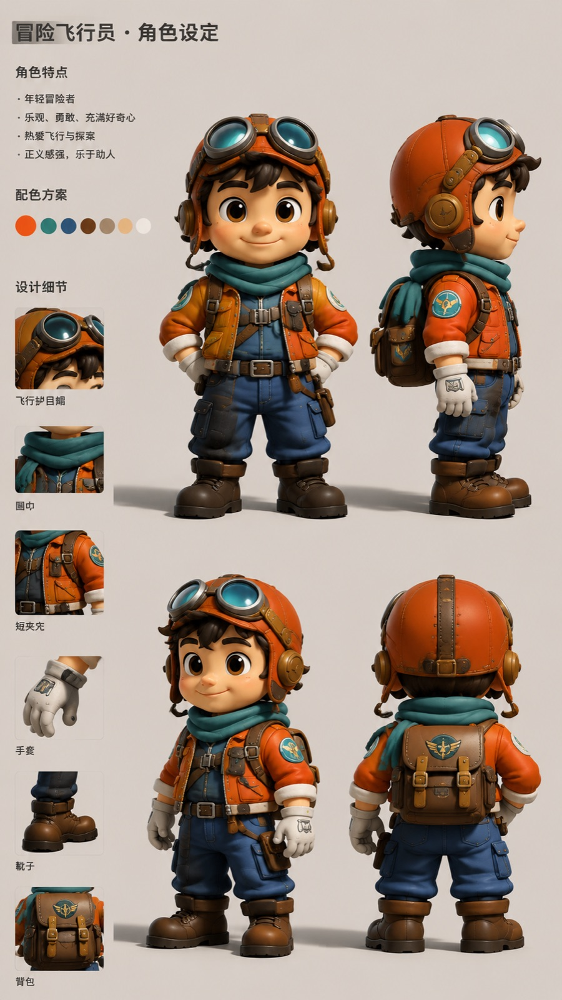
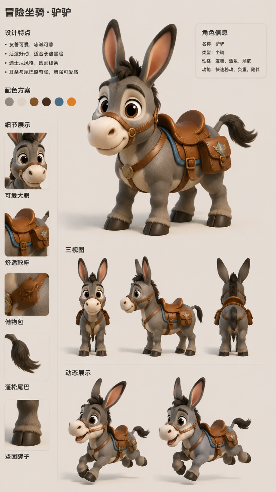
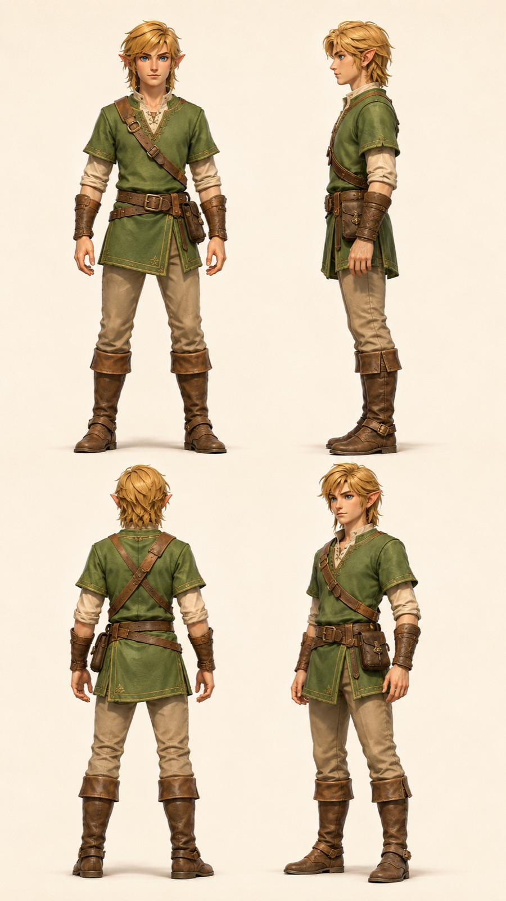
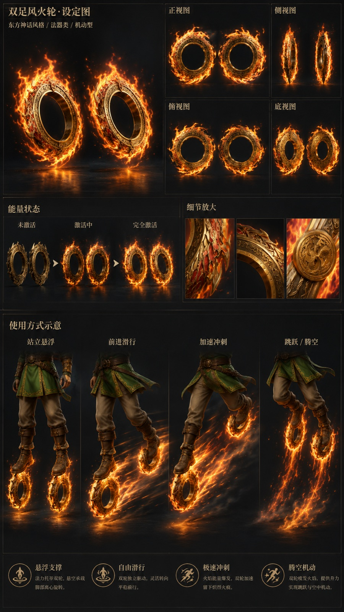
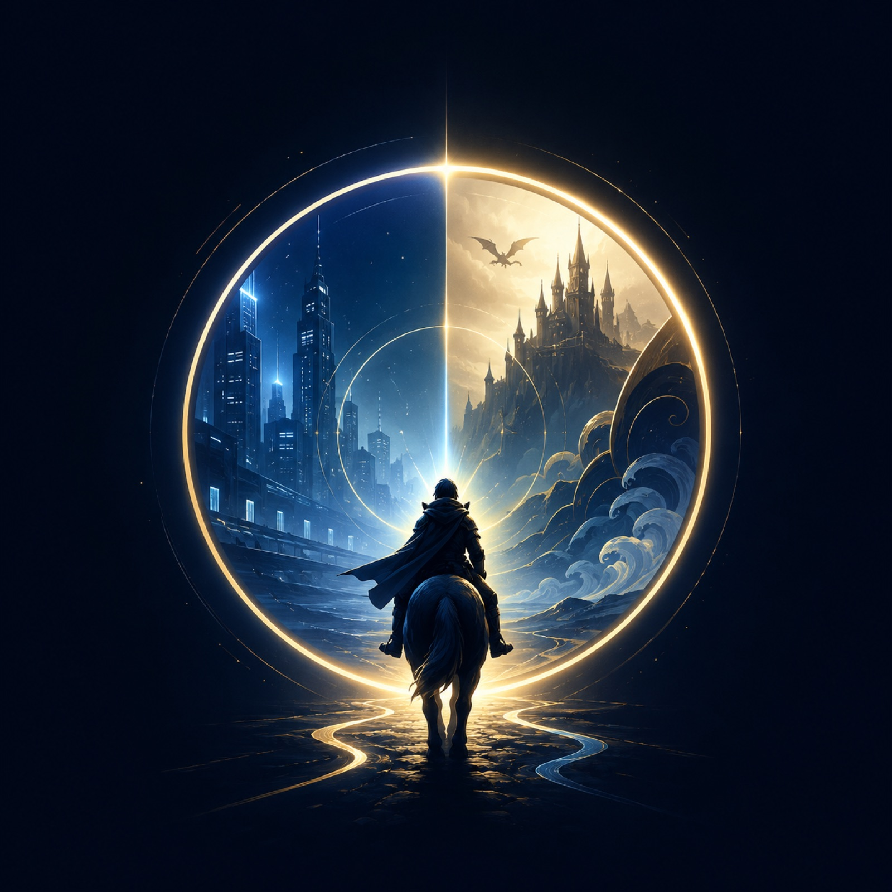

Shuttle Universe
穿梭宇宙
高速穿越型 AI 影像项目。重点不是把角色贴进画面，而是把角色、载具、场景和第三人称追随镜头做成一条能被短视频记住的速度线。
穿梭宇宙 02｜马里奥穿越城市
资料已归档
马里奥穿过雨后城市街道，重点是把游戏角色符号、现实街景、路面反光和速度模糊压进同一条竖屏动线。


穿梭宇宙 03｜林克踏火轮入海
资料已归档
林克踏着火轮冲向海面，火焰轨迹和深海空间对撞，卖点是动作落地感，不是单纯角色亮相。



穿梭宇宙 04｜柯南的高速追踪
资料已归档
柯南版本作为推理角色的高速穿梭样本，重点放在角色识别、追踪动线、镜头速度和规避表达的统一。
穿梭宇宙 05｜错名兽登场
资料已归档
错名兽是穿梭宇宙里的原创主角 IP：纸质姓名牌脸小怪物，骑着一体化红白螺旋巨型棒棒糖飞行器冲进不同世界。
穿梭宇宙 06｜哆啦 A 梦的高速穿梭
制作中
这一期素材还没有完成，暂时只保留卡位。等参考文档和生成步骤补齐后，再挂完整资料入口。
查看当前状态
资料未完成，页面暂不提供下载入口。